Sparse GEE
A demonstration of sparse regression using generalized estimating equations (GEE). Sparsity is in the general sense: variable selection, total variation regularization, polynomial trend filtering, and others. Various penalties are implemenmted: elestic net (enet), power family (bridge regression), log penalty, SCAD, and MCP.
Contents
Sparse linear regression (n>p)
Simulate a sample data set (n=500, p=100), with equicorrelation structure within clusters
clear; s = RandStream('mt19937ar','Seed',123); RandStream.setGlobalStream(s); n = 500; p = 100; X = randn(n,p); % generate a random design matrix X = bsxfun(@rdivide, X, sqrt(sum(X.^2,1))); % normalize predictors X = [ones(size(X,1),1) X]; % add intercept b = zeros(p+1,1); % true signal: b(2:6) = 3; % first 5 predictors are 3 b(7:11) = -3; % next 5 predictors are -3 % set up cluster structure clusterSize = 5; nCluster = n/clusterSize; id = kron((1:nCluster)', ones(clusterSize,1)); time = kron(ones(nCluster,1), (1:clusterSize)'); % equi-correlation structure alpha = 0.5; Vi = repmat(alpha, clusterSize, clusterSize); % equi-correlation struct. Vi(1:size(Vi,1)+1:numel(Vi)) = 1; V = kron(eye(nCluster), Vi); % simulate responses y = X*b+chol(V)'*randn(n,1);
Lasso sparse GEE at fixed tuning parameter values, using the correct correlation structure (equicorr)
penalty = 'enet'; % set penalty function to lasso penparam = 1; penidx = ... % leave intercept unpenalized [false; true(size(X,2)-1,1)]; % a large tuning parameter value lambda = 6; [betahat,alphahat,stats] ... % lasso GEE = gee_sparsereg(id,time,X,y,'normal','equicorr',lambda, ... 'penidx',penidx,'penalty',penalty,'penparam',penparam); display(stats); display(alphahat); figure; % plot penalized estimate bar(0:length(betahat)-1,betahat); xlabel('j'); ylabel('\beta_j'); xlim([-1,length(betahat)]); title([penalty '(' num2str(penparam) '), \lambda=' num2str(lambda,2)]); % a smaller tuning parameter value lambda = 3; [betahat,alphahat,stats] ... % lasso GEE = gee_sparsereg(id,time,X,y,'normal','equicorr',lambda, ... 'penidx',penidx,'penalty',penalty,'penparam',penparam); display(stats); display(alphahat); figure; % plot penalized estimate bar(0:length(betahat)-1,betahat); xlabel('j'); ylabel('\beta_j'); xlim([-1,length(betahat)]); title([penalty '(' num2str(penparam) '), \lambda=' num2str(lambda,2)]);
stats =
struct with fields:
iterations: 2
alphahat =
0.3269
stats =
struct with fields:
iterations: 5
alphahat =
0.3675
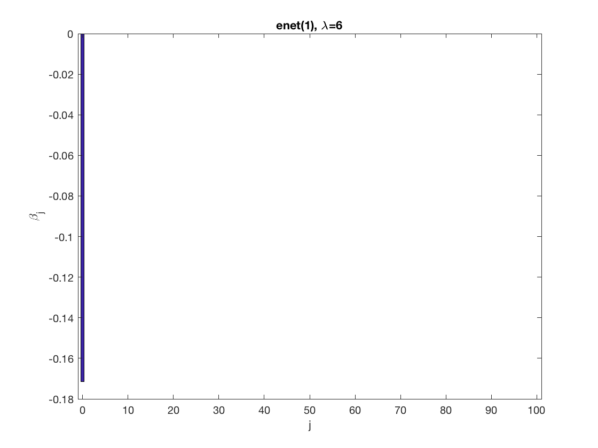 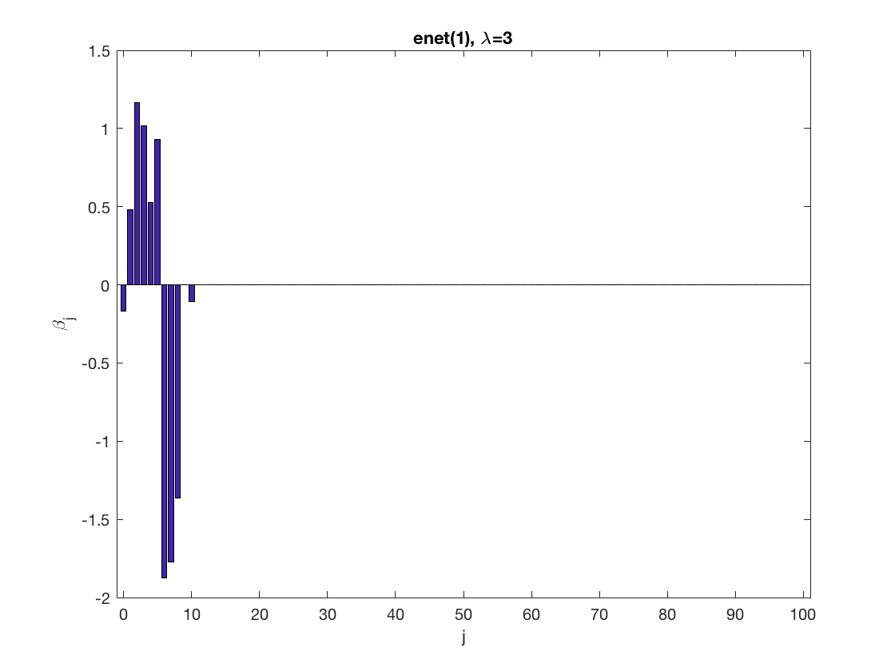 SCAD sparse GEE at fixed tuning parameter values, using the correct correlation structure (equicorr)
penalty = 'scad'; % set penalty function to SCAD penparam = 3; penidx = ... % leave intercept unpenalized [false; true(size(X,2)-1,1)]; % a large tuning parameter value lambda = 6; [betahat,alphahat] ... = gee_sparsereg(id,time,X,y,'normal','equicorr',lambda, ... 'penidx',penidx,'penalty',penalty,'penparam',penparam); display(alphahat); % plot penalized estimate figure; bar(0:length(betahat)-1,betahat); xlabel('j'); ylabel('\beta_j'); xlim([-1,length(betahat)]); title([penalty '(' num2str(penparam) '), \lambda=' num2str(lambda,2)]); % a small tuning parameter value lambda = 3; [betahat,alphahat] ... % lasso GEE = gee_sparsereg(id,time,X,y,'normal','equicorr',lambda, ... 'penidx',penidx,'penalty',penalty,'penparam',penparam); display(alphahat); figure; % plot penalized estimate bar(0:length(betahat)-1,betahat); xlabel('j'); ylabel('\beta_j'); xlim([-1,length(betahat)]); title([penalty '(' num2str(penparam) '), \lambda=' num2str(lambda,2)]);
alphahat =
0.3269
alphahat =
0.3675
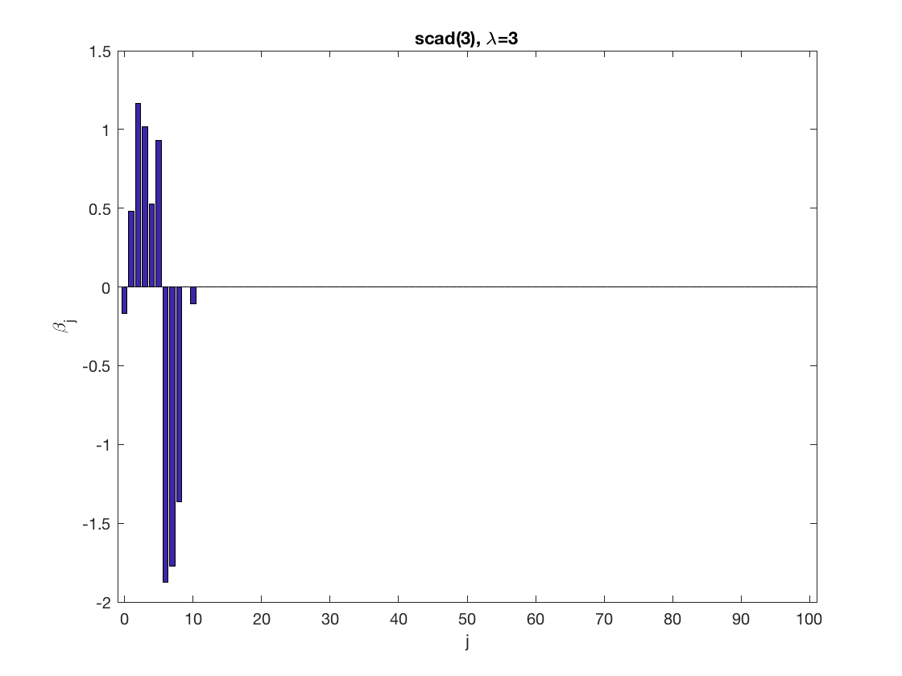 Power penalty GEE at fixed tuning parameter values, using the correct correlation structure (equicorr)
penalty = 'power'; % set penalty function to Power penparam = 0.5; penidx = ... % leave intercept unpenalized [false; true(size(X,2)-1,1)]; % a large tuning parameter value lambda = 6; [betahat,alphahat] ... = gee_sparsereg(id,time,X,y,'normal','equicorr',lambda, ... 'penidx',penidx,'penalty',penalty,'penparam',penparam); display(alphahat); % plot penalized estimate figure; bar(0:length(betahat)-1,betahat); xlabel('j'); ylabel('\beta_j'); xlim([-1,length(betahat)]); title([penalty '(' num2str(penparam) '), \lambda=' num2str(lambda,2)]); % a small tuning parameter value lambda = 3; [betahat,alphahat] ... % lasso GEE = gee_sparsereg(id,time,X,y,'normal','equicorr',lambda, ... 'penidx',penidx,'penalty',penalty,'penparam',penparam); display(alphahat); figure; % plot penalized estimate bar(0:length(betahat)-1,betahat); xlabel('j'); ylabel('\beta_j'); xlim([-1,length(betahat)]); title([penalty '(' num2str(penparam) '), \lambda=' num2str(lambda,2)]);
alphahat =
0.3395
alphahat =
0.3956
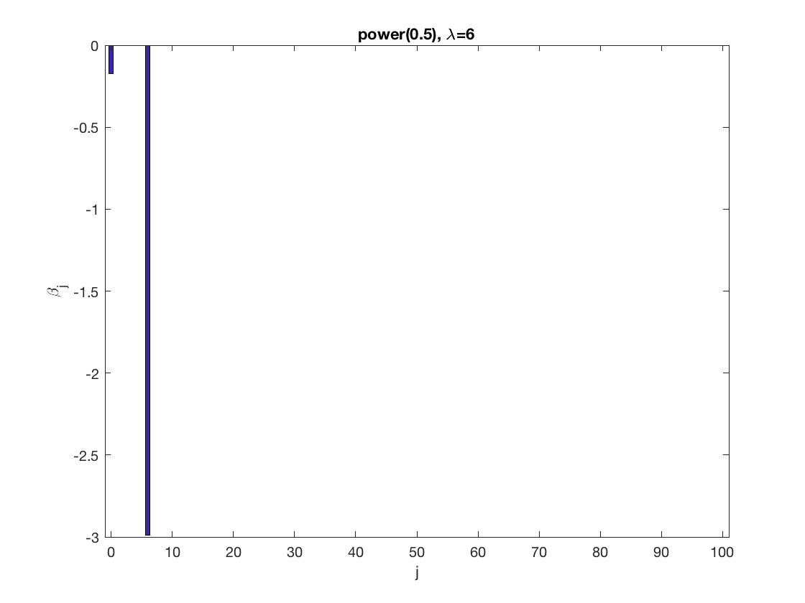 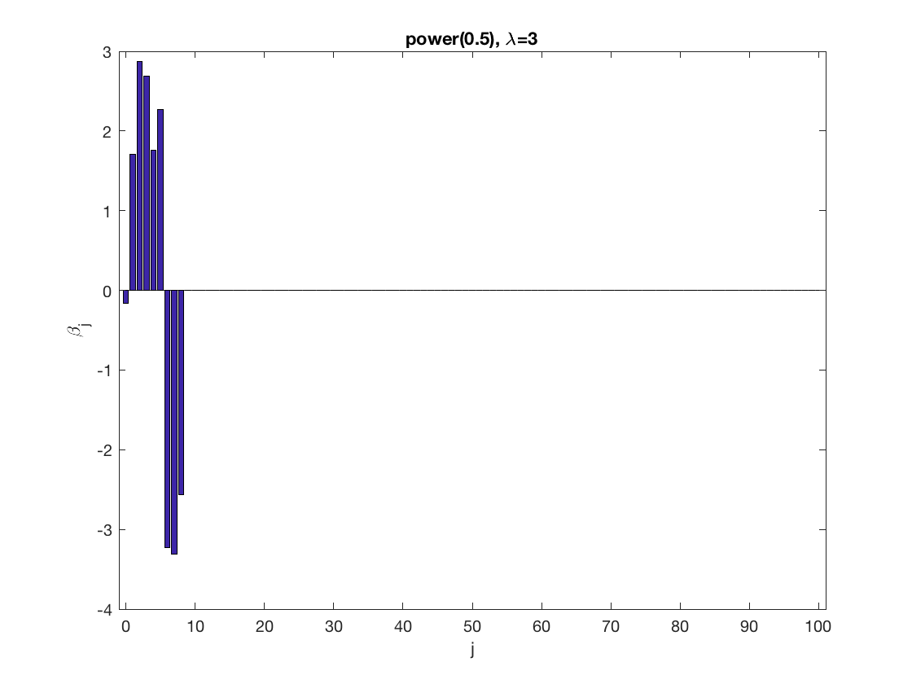 Lasso GEE at fixed tuning parameter values, using a wrong correlation structure (AR1)
penalty = 'enet'; % set penalty function to lasso penparam = 1; penidx = ... % leave intercept unpenalized [false; true(size(X,2)-1,1)]; % a large tuning parameter value lambda = 6; [betahat,alphahat] ... % lasso GEE = gee_sparsereg(id,time,X,y,'normal','AR1',lambda, ... 'penidx',penidx,'penalty',penalty,'penparam',penparam); display(alphahat); figure; % plot penalized estimate bar(0:length(betahat)-1,betahat); xlabel('j'); ylabel('\beta_j'); xlim([-1,length(betahat)]); title([penalty '(' num2str(penparam) '), \lambda=' num2str(lambda,2)]); % a small tuning parameter value lambda = 3; [betahat,alphahat] ... % lasso GEE = gee_sparsereg(id,time,X,y,'normal','AR1',lambda, ... 'penidx',penidx,'penalty',penalty,'penparam',penparam); display(alphahat); figure; % plot penalized estimate bar(0:length(betahat)-1,betahat); xlabel('j'); ylabel('\beta_j'); xlim([-1,length(betahat)]); title([penalty '(' num2str(penparam) '), \lambda=' num2str(lambda,2)]);
alphahat =
0.2708
alphahat =
0.3287
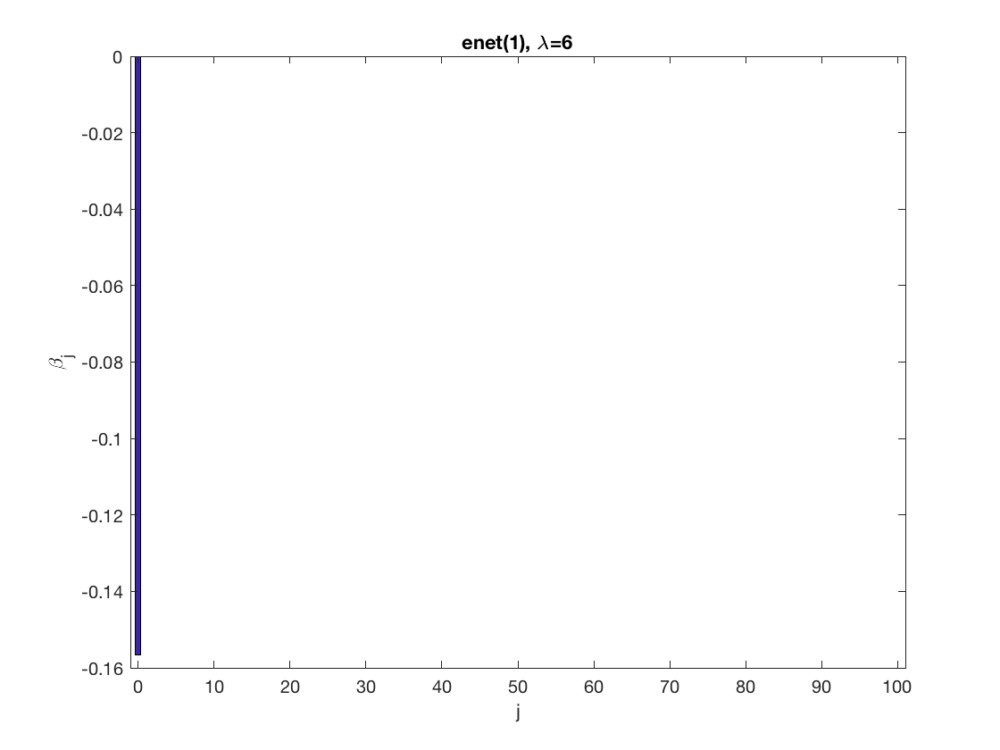 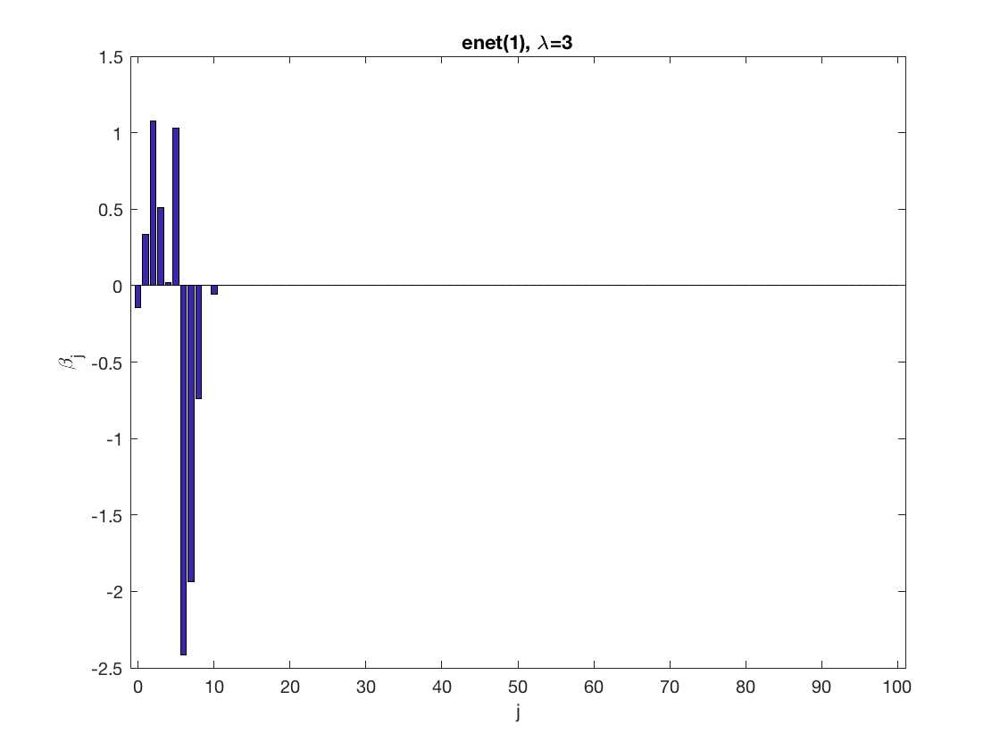 Lasso GEE at fixed tuning parameter values, using a wrong correlation structure (indep)
penalty = 'enet'; % set penalty function to lasso penparam = 1; penidx = ... % leave intercept unpenalized [false; true(size(X,2)-1,1)]; % a large tuning parameter value lambda = 6; [betahat,alphahat] ... % lasso GEE = gee_sparsereg(id,time,X,y,'normal','indep',lambda, ... 'penidx',penidx,'penalty',penalty,'penparam',penparam); display(alphahat); figure; % plot penalized estimate bar(0:length(betahat)-1,betahat); xlabel('j'); ylabel('\beta_j'); xlim([-1,length(betahat)]); title([penalty '(' num2str(penparam) '), \lambda=' num2str(lambda,2)]); % a small tuning parameter value lambda = 3; [betahat,alphahat] ... % lasso GEE = gee_sparsereg(id,time,X,y,'normal','indep',lambda, ... 'penidx',penidx,'penalty',penalty,'penparam',penparam); display(alphahat); figure; % plot penalized estimate bar(0:length(betahat)-1,betahat); xlabel('j'); ylabel('\beta_j'); xlim([-1,length(betahat)]); title([penalty '(' num2str(penparam) '), \lambda=' num2str(lambda,2)]);
alphahat =
[]
alphahat =
[]
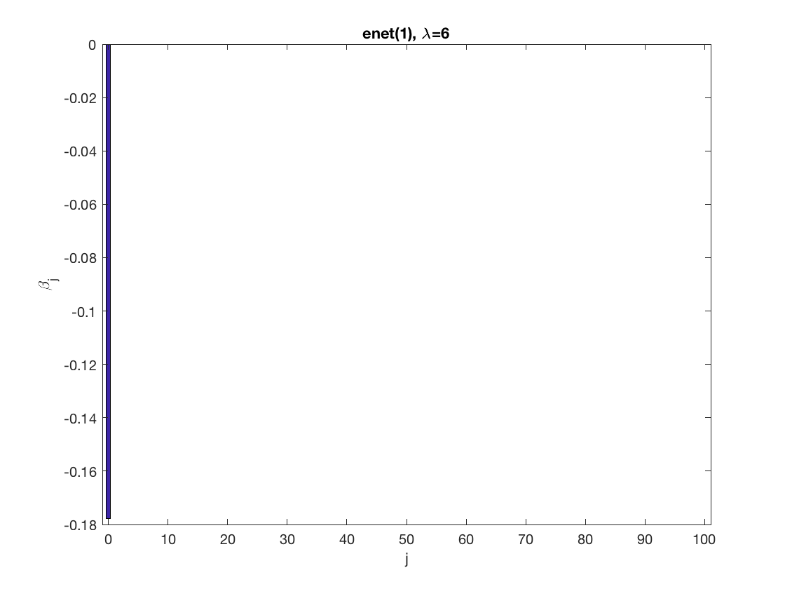 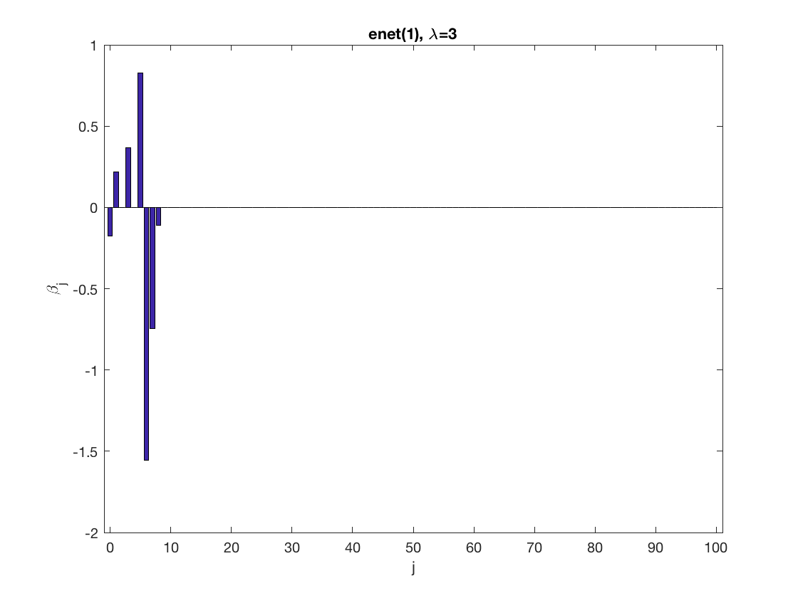 Lasso GEE at fixed tuning parameter values, using a wrong correlation structure (tridiag)
penalty = 'enet'; % set penalty function to lasso penparam = 1; penidx = ... % leave intercept unpenalized [false; true(size(X,2)-1,1)]; % a large tuning parameter value lambda = 6; [betahat,alphahat] ... % lasso GEE = gee_sparsereg(id,time,X,y,'normal','tridiag',lambda, ... 'penidx',penidx,'penalty',penalty,'penparam',penparam); display(alphahat); figure; % plot penalized estimate bar(0:length(betahat)-1,betahat); xlabel('j'); ylabel('\beta_j'); xlim([-1,length(betahat)]); title([penalty '(' num2str(penparam) '), \lambda=' num2str(lambda,2)]); % a small tuning parameter value lambda = 3; [betahat,alphahat] ... % lasso GEE = gee_sparsereg(id,time,X,y,'normal','tridiag',lambda, ... 'penidx',penidx,'penalty',penalty,'penparam',penparam); display(alphahat); figure; % plot penalized estimate bar(0:length(betahat)-1,betahat); xlabel('j'); ylabel('\beta_j'); xlim([-1,length(betahat)]); title([penalty '(' num2str(penparam) '), \lambda=' num2str(lambda,2)]);
alphahat =
0.2709
alphahat =
0.3478
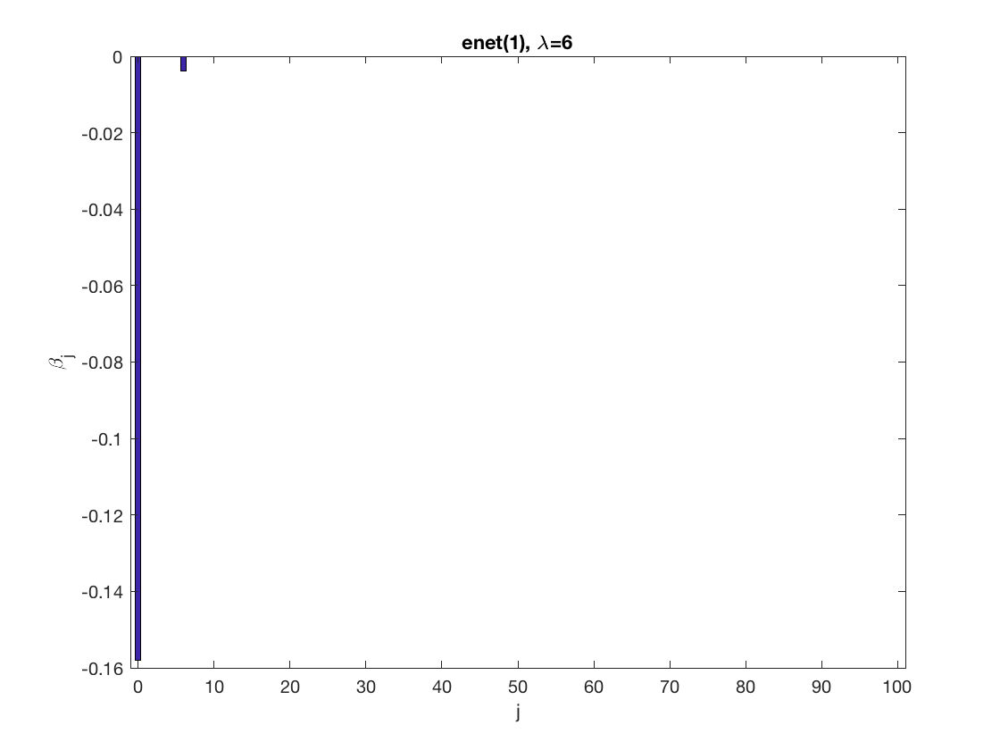 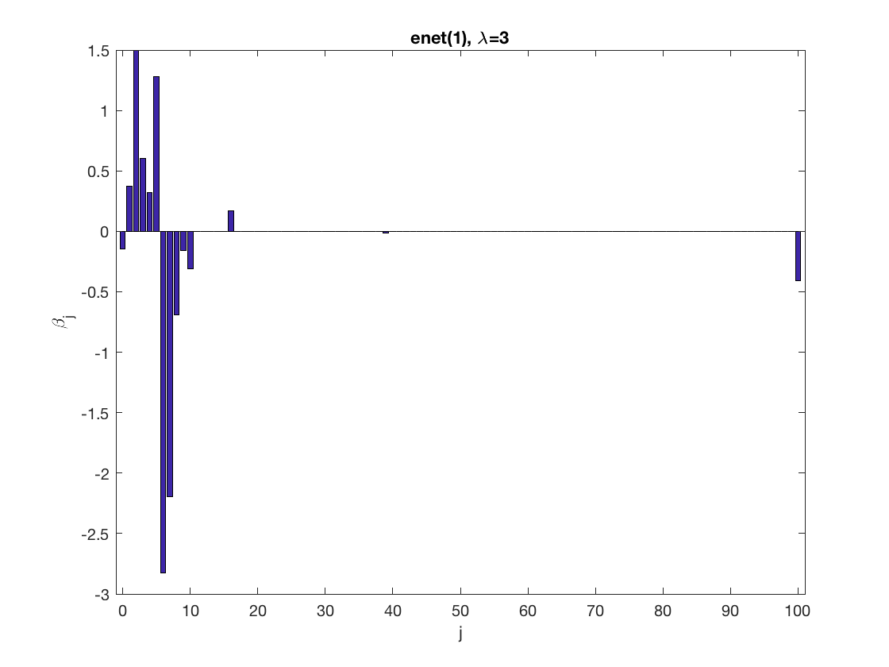 Lasso GEE at fixed tuning parameter values, using a wrong correlation structure (unstructured)
penalty = 'enet'; % set penalty function to lasso penparam = 1; penidx = ... % leave intercept unpenalized [false; true(size(X,2)-1,1)]; % a large tuning parameter value lambda = 6; [betahat,alphahat,stats] ... % lasso GEE = gee_sparsereg(id,time,X,y,'normal','unstructured',lambda, ... 'penidx',penidx,'penalty',penalty,'penparam',penparam); display(alphahat); display(stats); figure; % plot penalized estimate bar(0:length(betahat)-1,betahat); xlabel('j'); ylabel('\beta_j'); xlim([-1,length(betahat)]); title([penalty '(' num2str(penparam) '), \lambda=' num2str(lambda,2)]); % a small tuning parameter value lambda = 3; [betahat,alphahat] ... % lasso GEE = gee_sparsereg(id,time,X,y,'normal','unstructured',lambda, ... 'penidx',penidx,'penalty',penalty,'penparam',penparam); display(alphahat); figure; % plot penalized estimate bar(0:length(betahat)-1,betahat); xlabel('j'); ylabel('\beta_j'); xlim([-1,length(betahat)]); title([penalty '(' num2str(penparam) '), \lambda=' num2str(lambda,2)]);
alphahat =
1.0521 0.3937 0.3305 0.1450 0.5019
0.3937 0.9893 0.3839 0.2915 0.4713
0.3305 0.3839 0.9716 0.1788 0.4819
0.1450 0.2915 0.1788 0.7457 0.1248
0.5019 0.4713 0.4819 0.1248 1.2817
stats =
struct with fields:
iterations: 3
alphahat =
1.1360 0.4668 0.3917 0.1866 0.5937
0.4668 1.0841 0.4666 0.3679 0.5243
0.3917 0.4666 1.0255 0.2368 0.5626
0.1866 0.3679 0.2368 0.8075 0.1959
0.5937 0.5243 0.5626 0.1959 1.3913
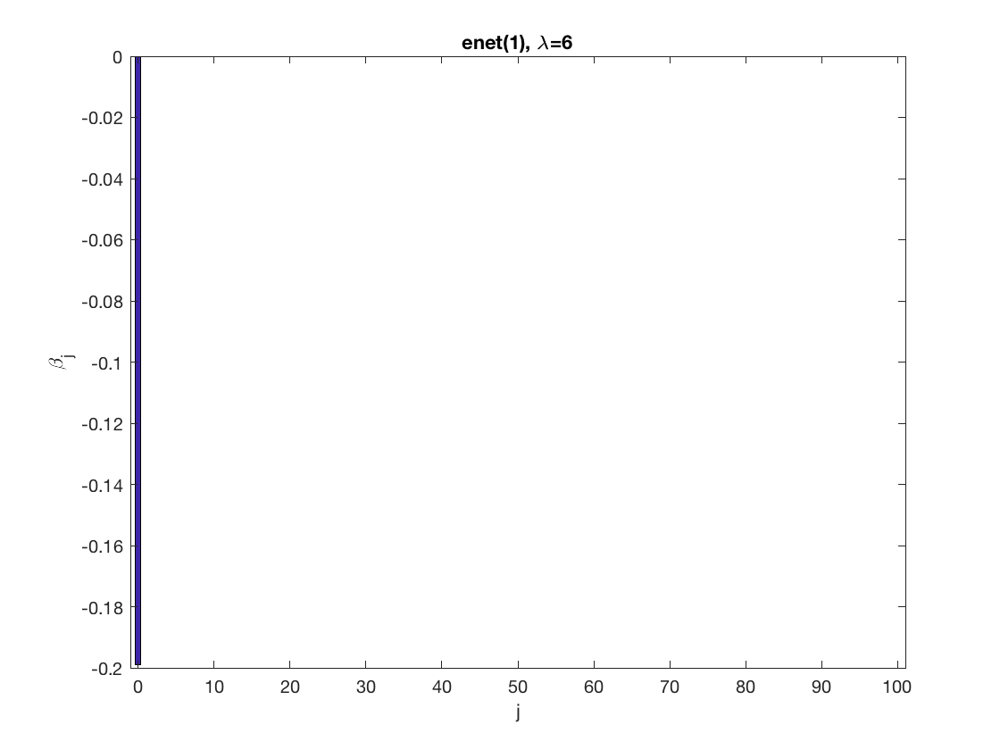 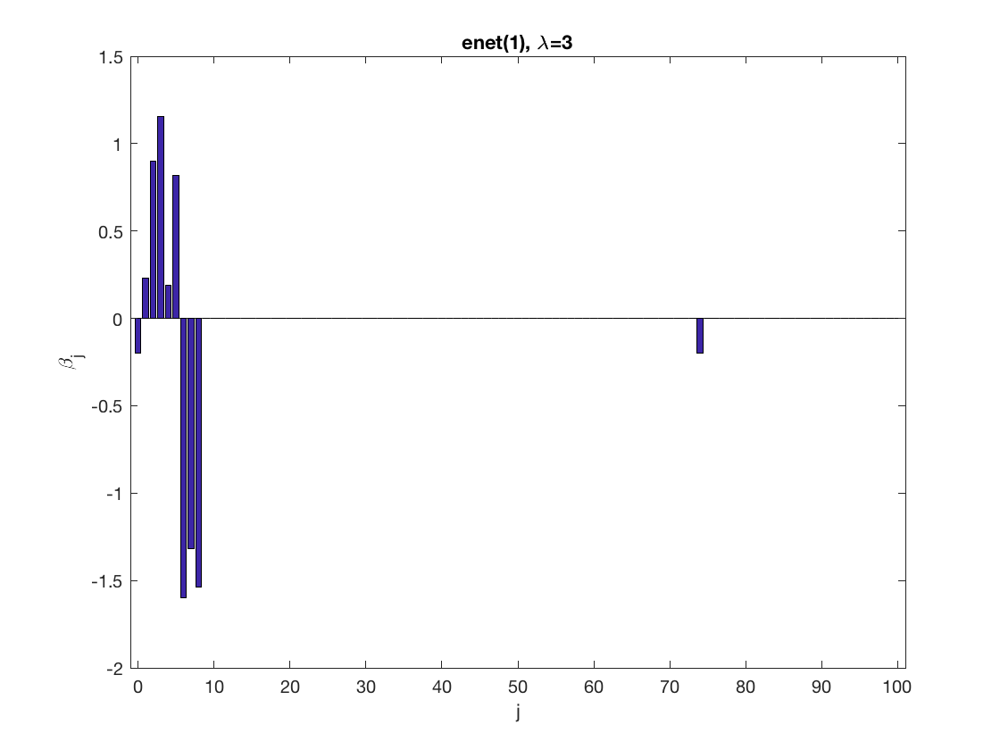 Sparse linear regression (n<p)
Simulate a sample data set (n=500, p=100), with equicorrelation structure within clusters
clear; s = RandStream('mt19937ar','Seed',123); RandStream.setGlobalStream(s); n = 100; p = 1000; X = randn(n,p); % generate a random design matrix X = bsxfun(@rdivide, X, sqrt(sum(X.^2,1))); % normalize predictors X = [ones(size(X,1),1) X]; % add intercept b = zeros(p+1,1); % true signal: b(2:6) = 3; % first 5 predictors are 3 b(7:11) = -3; % next 5 predictors are -3 % set up cluster structure clusterSize = 5; nCluster = n/clusterSize; id = kron((1:nCluster)', ones(clusterSize,1)); time = kron(ones(nCluster,1), (1:clusterSize)'); % equi-correlation structure alpha = 0.5; Vi = repmat(alpha, clusterSize, clusterSize); % equi-correlation struct. Vi(1:size(Vi,1)+1:numel(Vi)) = 1; V = kron(eye(nCluster), Vi); % simulate responses y = X*b+chol(V)'*randn(n,1);
Lasso sparse GEE at fixed tuning parameter values, using the correct correlation structure (equicorr)
penalty = 'enet'; % set penalty function to lasso penparam = 1; penidx = ... % leave intercept unpenalized [false; true(size(X,2)-1,1)]; % a large tuning parameter value lambda = 10; [betahat,alphahat,stats] ... % lasso GEE = gee_sparsereg(id,time,X,y,'normal','equicorr',lambda, ... 'penidx',penidx,'penalty',penalty,'penparam',penparam); display(stats); display(alphahat); figure; % plot penalized estimate bar(0:length(betahat)-1,betahat); xlabel('j'); ylabel('\beta_j'); xlim([-1,length(betahat)]); title([penalty '(' num2str(penparam) '), \lambda=' num2str(lambda,2)]); % a smaller tuning parameter value lambda = 5; [betahat,alphahat,stats] ... % lasso GEE = gee_sparsereg(id,time,X,y,'normal','equicorr',lambda, ... 'penidx',penidx,'penalty',penalty,'penparam',penparam); display(stats); display(alphahat); figure; % plot penalized estimate bar(0:length(betahat)-1,betahat); xlabel('j'); ylabel('\beta_j'); xlim([-1,length(betahat)]); title([penalty '(' num2str(penparam) '), \lambda=' num2str(lambda,2)]);
stats =
struct with fields:
iterations: 2
alphahat =
0.2892
stats =
struct with fields:
iterations: 6
alphahat =
0.2886
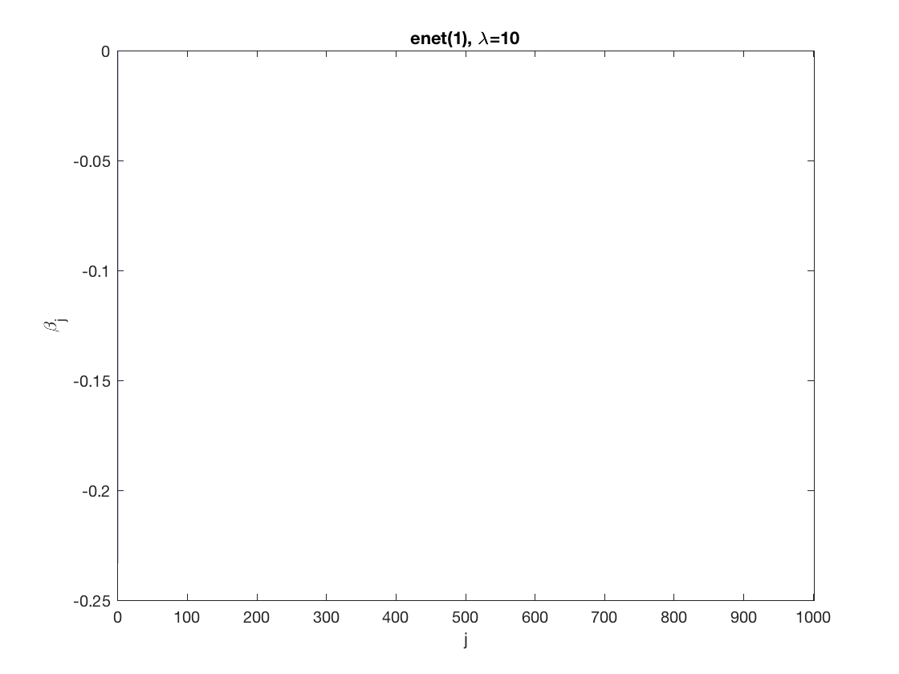 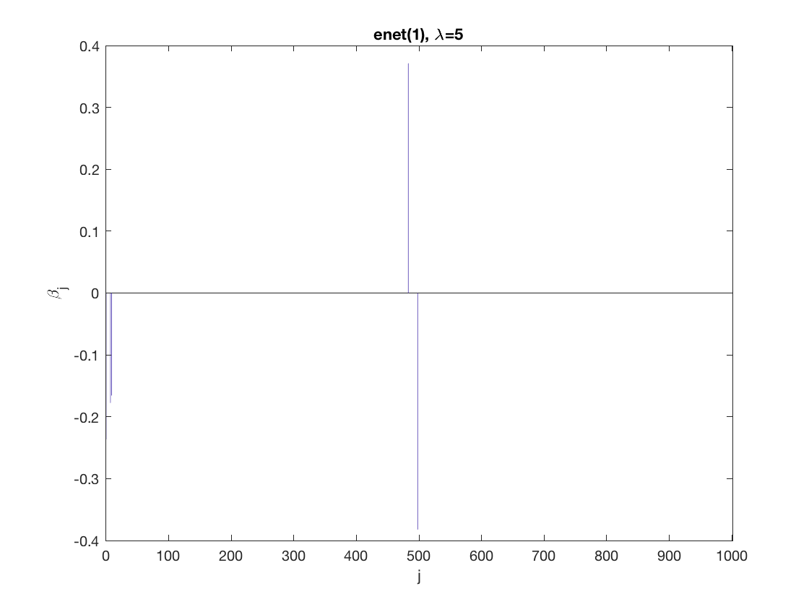 Power sparse GEE at fixed tuning parameter values, using the correct correlation structure (equicorr)
penalty = 'power'; % set penalty function to SCAD penparam = 0.5; penidx = ... % leave intercept unpenalized [false; true(size(X,2)-1,1)]; % a large tuning parameter value lambda = 10; [betahat,alphahat] ... = gee_sparsereg(id,time,X,y,'normal','equicorr',lambda, ... 'penidx',penidx,'penalty',penalty,'penparam',penparam); display(alphahat); % plot penalized estimate figure; bar(0:length(betahat)-1,betahat); xlabel('j'); ylabel('\beta_j'); xlim([-1,length(betahat)]); title([penalty '(' num2str(penparam) '), \lambda=' num2str(lambda,2)]); % a small tuning parameter value lambda = 5; [betahat,alphahat] ... % lasso GEE = gee_sparsereg(id,time,X,y,'normal','equicorr',lambda, ... 'penidx',penidx,'penalty',penalty,'penparam',penparam); display(alphahat); figure; % plot penalized estimate bar(0:length(betahat)-1,betahat); xlabel('j'); ylabel('\beta_j'); xlim([-1,length(betahat)]); title([penalty '(' num2str(penparam) '), \lambda=' num2str(lambda,2)]);
alphahat =
0.2892
alphahat =
0.4849
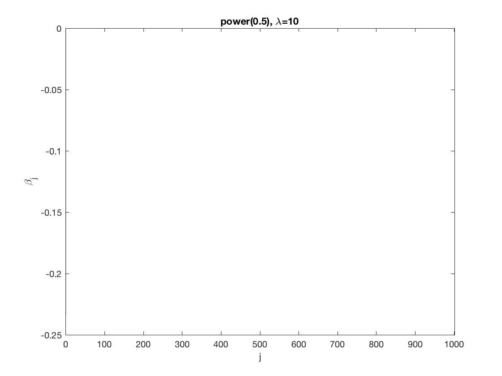 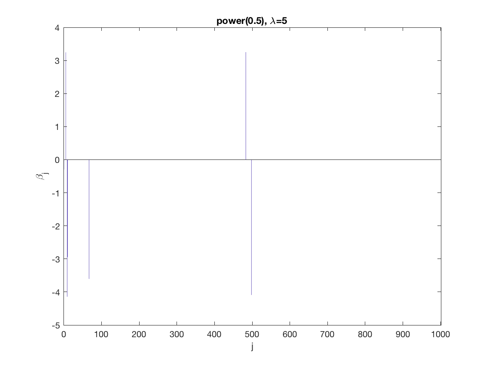